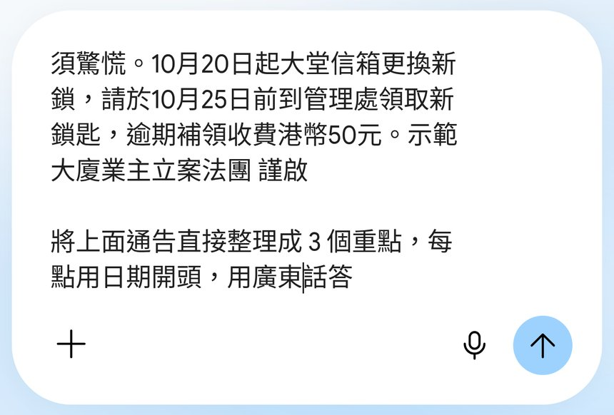
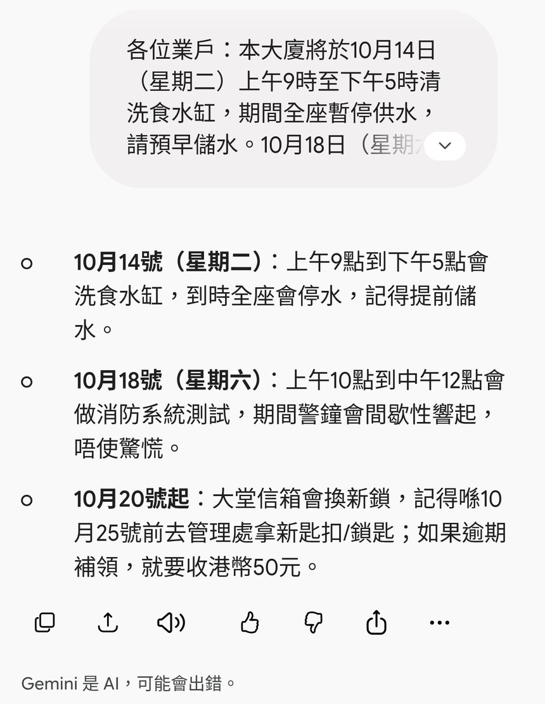

跟 Reel 用免費 Gemini 網頁版：將 WhatsApp group 收到嘅法團／管理處長通告成段貼入對話框，打一句「整理成 3 個重點，每點用日期開頭」，撳傳送再撳複製，貼返屋企 group。附真實畫面截圖、可抄 Prompt 同核對提醒。
Reel 一句講晒：法團長通告交俾 Gemini，3 步變 3 個日期重點
你會學到
- 點樣將成段通告貼入 Gemini 網頁版
- 用一句提示叫佢整理成 3 個用日期開頭嘅重點
- 點樣撳複製貼返 WhatsApp，同轉發前要對返原文
開始前準備
- 電腦瀏覽器開 gemini.google.com，用 Google 帳戶登入（示範用免費版，畫面顯示 Gemini Flash）
- WhatsApp group 收到嘅法團／管理處通告全文（長按訊息複製）
- 通告有住戶姓名、單位號碼或電話，貼之前先刪走
3 步做法
貼成段通告：電腦開 gemini.google.com，將 WhatsApp group 收到嘅法團／管理處通告成段貼入下面「問 Gemini」對話框。
示範通告係我哋自己寫嘅虛構通告（停水、消防測試、換信箱鎖三件事），冇真實住戶資料。
唔使自己先分段或者刪走客套說話，成段貼入去就得；但姓名、單位號碼呢類個人資料要先刪。
打一句撳傳送：喺通告後面另起一行，打「將上面通告整理成 3 個重點，每點用日期開頭，用廣東話答」，再撳右下角箭咀傳送掣。
「每點用日期開頭」係重點：屋企人一眼就睇到邊日要做咩。通告唔止 3 件事，可以將「3」改成實際數目，或者叫佢「列晒所有有日期嘅事項」。
想用書面語轉發，將「用廣東話答」改成「用書面語」。

真實畫面（2026-10-05 自行截圖，窄視窗）：通告尾段＋一句提示，右下角係傳送掣。 撳複製：3 點連日期出晒（例：10月14號停水、10月18號消防測試、10月20號起換信箱鎖），撳答案下面最左邊嘅複製掣，貼返屋企 group。
示範結果：「10月14號（星期二）上午9點到下午5點洗食水缸，全座停水」、「10月18號（星期六）上午10點到中午12點消防系統測試」、「10月20號起大堂信箱換新鎖，10月25號前去管理處拎新鎖匙，逾期補領收港幣50元」。
轉發前逐個日期、時間同金額對返原文：AI 有機會睇漏或者寫錯，Gemini 畫面底亦寫明「Gemini 是 AI，可能會出錯」。

真實畫面（2026-10-05 自行截圖）：3 點日期開頭，下面工具列最左邊係複製掣。
可抄 Prompt
Reel 用嘅一句（貼喺通告後面）
將上面通告整理成 3 個重點，每點用日期開頭，用廣東話答
通告唔止 3 件事（列晒）
將上面通告入面所有有日期或者限期嘅事項列出嚟，每點用日期開頭，時間同金額照原文寫，用廣東話答；冇寫日期嘅就寫「原文未寫日期」。
書面語版（轉發俾長輩）
將上面通告整理成 3 個重點，每點用日期開頭，用簡單書面語，每點唔超過 30 字。
常見錯誤／注意事項
- 唔對原文就轉發：日期、時間、金額逐個對返通告，AI 可能睇漏或寫錯。
- 貼入個人資料：住戶姓名、單位號碼、電話先刪走先貼。
- 硬要「3 點」：通告有 4、5 件事就改數字或者叫佢列晒，唔好畀佢自己刪走。
- 當正式通知：轉發時講明係 AI 整理，以法團／管理處原文為準。
香港用戶留意
Gemini 網頁版官方地區名單包括 Hong Kong。
官方說明
- Where you can use the Gemini web app（Gemini Apps Help）
官方地區名單（包括 Hong Kong） - Gemini Apps Privacy Hub（Gemini Apps Help）
官方講 Gemini 點樣處理你貼入去嘅內容同活動紀錄設定
（以上連結當日逐條打開核對；介面同額度可能更新，以官方為準）
原帖
睇原 Reel ↗（2026-10-05 發佈）